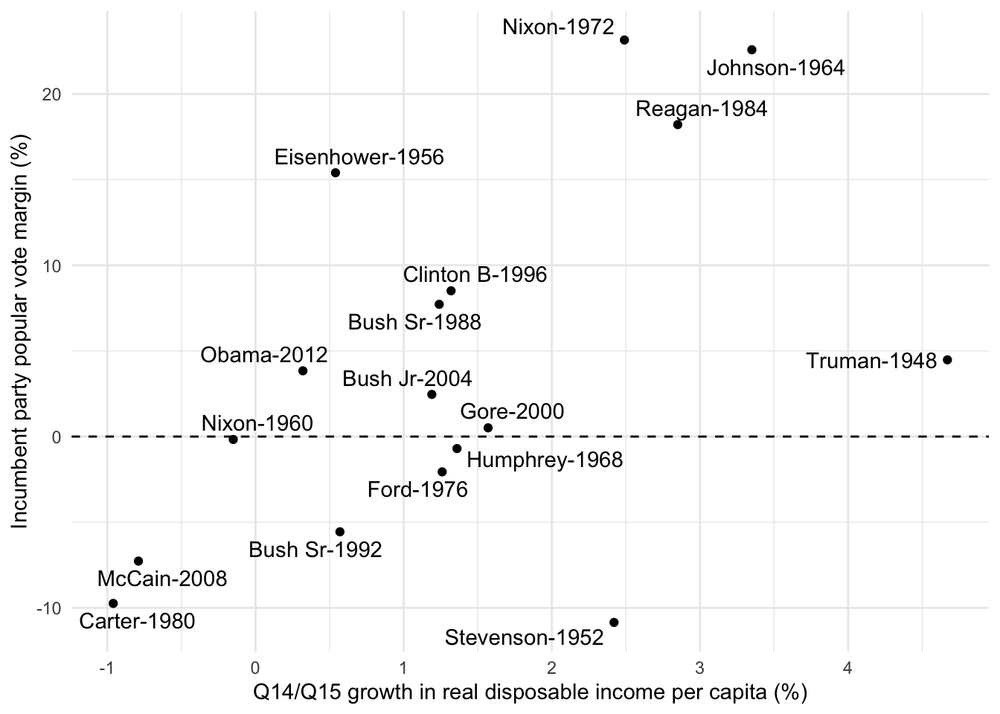
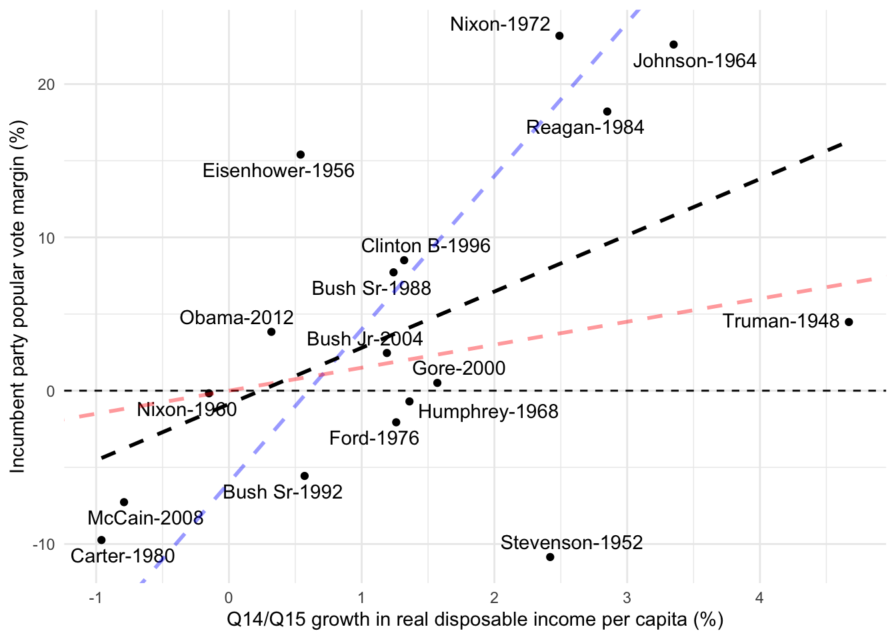
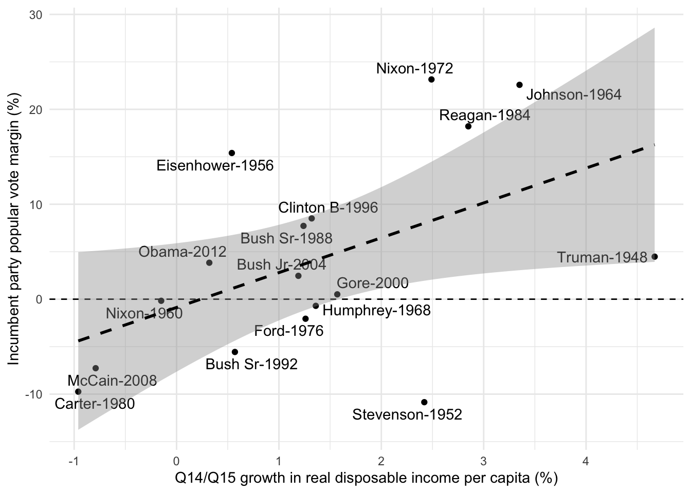
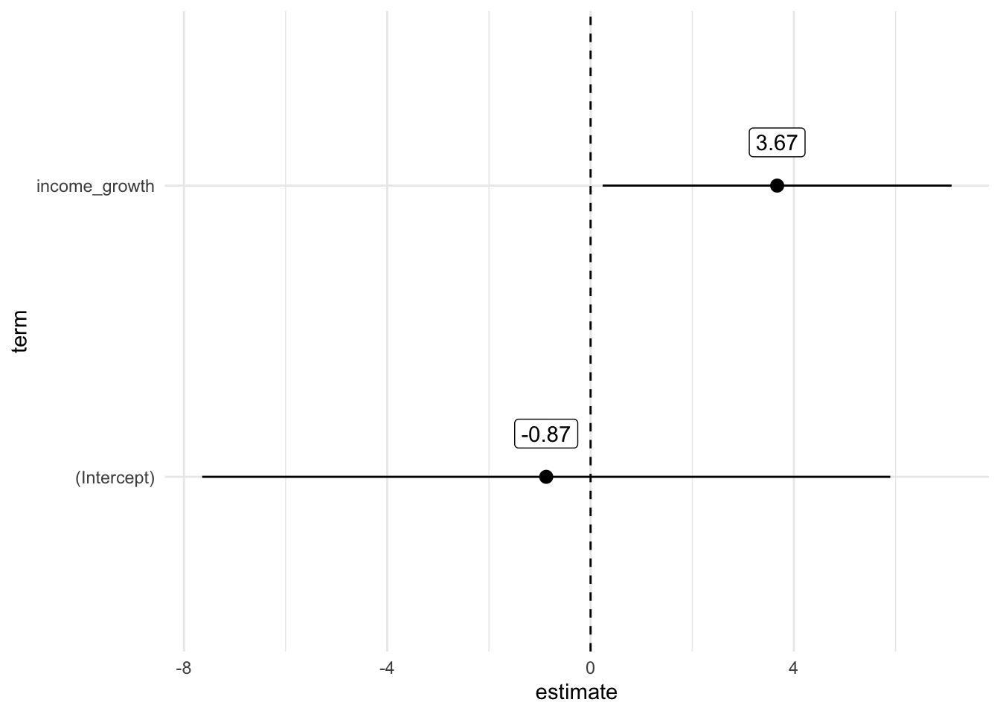
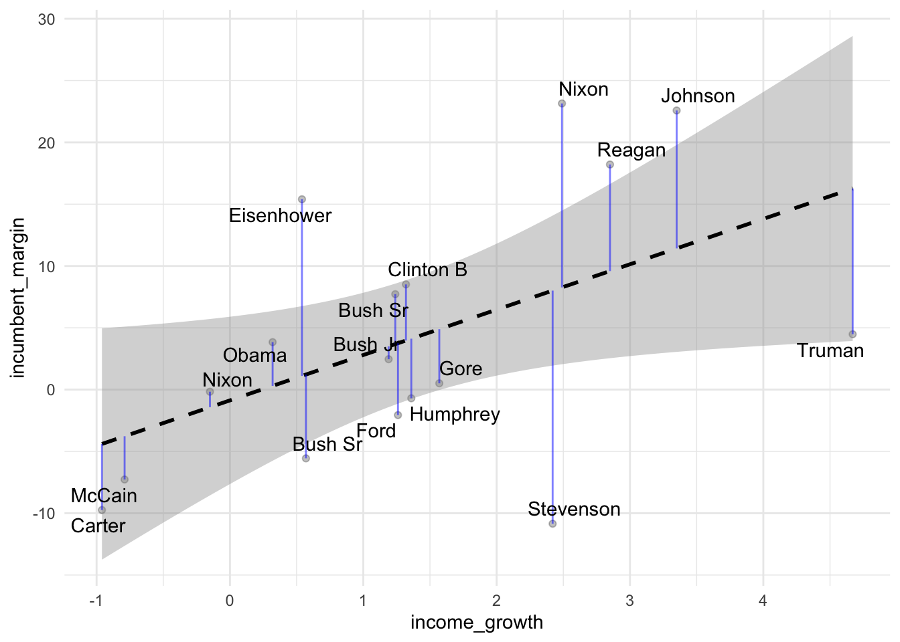

After examining the relationship between two categorical variables (using the chi-square test) and between a categorical and a continuous variable (using the t-test), we will now explore the relationship between two continuous variables using correlation and simple regression.
To explore this, we will examine data on economic voting. Economic voting is a theory suggesting that voters reward or punish the incumbent government based on the state of the economy, and we aim to test this theory to see if it holds.
Our research question is: Is there a relationship between the state of the economy and the performance of the incumbent party in the United States? To investigate this, I am using an example developed by François Briatte, the previous instructor of this course, which uses data from Larry Bartels on economic voting in the United States.
# If you haven't already, install the following packages with install.packages("package_name")library(tidyverse)# Because we always need itlibrary(broom)# To work with regression resultslibrary(stargazer)# To print regression results nicely# Import datasetus_elections<-read_csv("data/us_elections.csv")us_elections
# A tibble: 17 × 10
year incumbent_margin income_growth incumbent candidate_winner
<dbl> <dbl> <dbl> <chr> <chr>
1 1948 4.48 4.67 Truman Truman
2 1952 -10.8 2.42 Stevenson Eisenhower
3 1956 15.4 0.54 Eisenhower Eisenhower
4 1960 -0.17 -0.15 Nixon Kennedy
5 1964 22.6 3.35 Johnson Johnson
6 1968 -0.7 1.36 Humphrey Nixon
7 1972 23.2 2.49 Nixon Nixon
8 1976 -2.06 1.26 Ford Carter
9 1980 -9.74 -0.96 Carter Reagan
10 1984 18.2 2.85 Reagan Reagan
11 1988 7.72 1.24 Bush Sr Bush Sr
12 1992 -5.56 0.57 Bush Sr Clinton B
13 1996 8.51 1.32 Clinton B Clinton B
14 2000 0.51 1.57 Gore Bush Jr
15 2004 2.46 1.19 Bush Jr Bush Jr
16 2008 -7.27 -0.79 McCain Obama
17 2012 3.84 0.32 Obama Obama
# ℹ 5 more variables: candidate_loser <chr>, party_incumbent <chr>,
# winner_incumbent <lgl>, party_winning <chr>, tenure <dbl>
In this dataset, we have only 17 observations on each election in the US from 1948 to 2012. To operationalize these two concepts, state of the economy and performance of the incumbent party, we rely on two variables available in this dataset : the incumbent party’s margin of victory and the growth of disposable income per capita in the two last quarters before the election. The incumbent party’s margin of victory is the difference between the incumbent party’s vote share and the vote share of the main opposition party. Real disposable income here is a measure of people’s purchasing power after accounting for taxes and inflation.
A first way to look at the relationship between those two variables is to compute the correlation between them. To look at correlations we use the cor() function that takes two continuous variables as argument. Note that in the case we have missing values in our data, the cor function will not work. In that case, you can add use = "complete.obs" as argument in the cor()function.
The result is a correlation coefficient of 0.5. A correlation coefficient measures the strength and direction of a linear relationship between two variables. The correlation coefficient ranges between -1 and 1, where -1 indicates a perfect negative linear relationship, 1 indicates a perfect positive linear relationship, and 0 indicates no linear relationship. Correlations coefficients give you a indicator of the intensity of the relationships between two continuous variables. Here we seen that the coefficient is ~ 0.5, which indicates a moderate positive relationship between the two variables. As the state of the economy grows, the incumbent party’s margin of victory increases.
We can also test whether this correlation is statistically significant. To do so, we can use the cor.test() function, working in the same way as the t.test() function. Here, we are testing the null hypothesis that the correlation between the two variables is equal to 0 and the p-value is the probability of observing a correlation at least as strong if the null hypothesis were true. The p-value here is 0.038, which is below the conventional threshold of 0.05, so we can reject the null hypothesis and conclude that the correlation is statistically significant.
Pearson's product-moment correlation
data: us_elections$incumbent_margin and us_elections$income_growth
t = 2.2794, df = 15, p-value = 0.0377
alternative hypothesis: true correlation is not equal to 0
95 percent confidence interval:
0.03513119 0.79423161
sample estimates:
cor
0.5072114
But still here, we are not able to say how much the incumbent party’s margin of victory increases when the state of the economy grows. This is where correlation often falls short and linear regression comes in. Linear regression is a statistical method that models the relationship between a dependent variable and one or more independent variables. In our case, we want to model the relationship between the incumbent party’s margin of victory and the growth of disposable income per capita. Linear regression is considered a workhorse in quantitative social sciences. It’s safe to say that publishing quantitative results can be challenging without using this or a more sophisticated model. Whether you’re a quantitative researcher aiming to employ it or a qualitative researcher seeking to comprehend a quantitative article relevant to your work, understanding how regression operates is crucial.
When dealing with a single independent variable, we refer to it as simple linear regression, which is our primary focus today. In the next session, we will delve into multiple linear regression, involving more than one independent variable.
In linear regression, our objective is to establish a linear relationship between one or more independent variables and a continuous dependent variable. However, when working with a dependent variable that is not continuous, other models become relevant, and these will be explored in the upcoming semester. One such model is logistic regression, which is employed when the dependent variable is binary (e.g., whether individuals have voted for Trump or not).
Our regression equation for each incumbent party is a given year \({i}\) is written below.
\[
margin_{i} = \beta_{0} + \beta_{1}income_{i} + \epsilon_{i}
\] The goal of the regression is to estimate the parameters of our model, which are \(\beta_{0}\) and \(\beta_{1}\). The error term \(\epsilon_{i}\) is not a parameter: once the model is estimated, the residuals give us an estimate of it.
\(\beta_{0}\) corresponds to the intercept of the regression line. It provides the estimated value of the margin of victory for the incumbent party when the growth of real disposable income is 0. This intercept may or may not have a meaningful interpretation depending on the context of your data.
\(\beta_{1}\) represents the slope of the regression line. It indicates the estimated change in the margin of victory for the incumbent party for a one-unit change in the growth of real disposable income. This coefficient is of particular interest as it shows the direction and the size of the relationship between the two variables, in the units of these variables.
\(\epsilon_{i}\) is the error term that accounts for the difference between the observed and predicted values of the dependent variable. It captures the variability in the dependent variable that is not explained by the independent variable(s).
To estimate the parameters of our model, we use the method of ordinary least squares (OLS). It allows to fit a line through the data points in a way that minimizes the sum of the squared prediction errors. In other words, it minimizes the distance between the line and the data points. This is why it is called “least squares”. This might still sound abstract to you so let’s look at the data !
elec_plot<-us_elections|>ggplot(aes(income_growth, incumbent_margin))+# Create a scatter plotgeom_point()+# Add a line at 0 on the y-axisgeom_hline(yintercept =0, lty ="dashed")+# Add president namesggrepel::geom_text_repel(aes(label =str_c(incumbent, "-", year)))+# Change axix labelslabs(y ="Incumbent party popular vote margin (%)", x ="Q14/Q15 growth in real disposable income per capita (%)")+theme_minimal()elec_plot

The goal of linear regression is to find the best-fitting straight line that represents the relationship between two variables based on the given data points. The “best fit” line is determined by minimizing the distance between the line and the actual data points. This distance is measured using residuals, which are the vertical distances from each data point to the line. The line that results in the smallest sum of squared residuals provides the best approximation of the relationship between the variables. For example, if we examine the plot below, we can observe that the red and blue lines do not fit the data points well, whereas the black line represents a better fit.
elec_plot+# One first "wrong" regression linegeom_abline( intercept =-6, slope =10, color ="blue", linetype ="dashed", size =1, alpha =0.4)+# A second "wrong" regression linegeom_abline( intercept =0, slope =1.5, color ="red", linetype ="dashed", size =1, alpha =0.4)+# The true regression linegeom_smooth( method ="lm", linetype ="dashed", color ="black", se =FALSE, size =1, alpha =0.4)

Linear regression not only provides us with the best-fitting line but also offers valuable information about the uncertainty associated with the estimated model parameters. This uncertainty can be represented by a confidence interval around the regression line. Below, you can see this with the grey area around our regression line: for each value of income growth, it shows the range of plausible values for the average predicted margin. The wider the grey area, the more uncertain our predictions are.
elec_plot+geom_smooth(method ="lm", linetype ="dashed", color ="black", se =TRUE, size =1, alpha =0.4)

8.1 Running a regression in R
Now we have a better idea of what a regression is, let’s run our first model. In R it is really easy to do ! You need to use the stats::lm() function. You need to insert a formula with on the left, the variable you want to explain and the right, the independent variables and in between, a ~. Before running the model, we have to make sure to know whether we have missing values or not in our data because the model will just drop them out and it is better to be aware of this.
model<-lm(incumbent_margin~income_growth, data =us_elections)
Once we have run the model, we have to interpret the results. In R, you have different ways to look at and to manipulate the results of a regression model. To have a quick look at the results, you can use the summary() function. It provides you with the main results of the model.
Call:
lm(formula = incumbent_margin ~ income_growth, data = us_elections)
Residuals:
Min 1Q Median 3Q Max
-18.860 -5.343 -1.036 4.537 14.883
Coefficients:
Estimate Std. Error t value Pr(>|t|)
(Intercept) -0.8726 3.1754 -0.275 0.7872
income_growth 3.6707 1.6104 2.279 0.0377 *
---
Signif. codes: 0 '***' 0.001 '**' 0.01 '*' 0.05 '.' 0.1 ' ' 1
Residual standard error: 9.431 on 15 degrees of freedom
Multiple R-squared: 0.2573, Adjusted R-squared: 0.2077
F-statistic: 5.196 on 1 and 15 DF, p-value: 0.0377
Our estimate for the intercept - 0.873. This means that if the Q14/Q15 growth in real disposable income per capita is 0, the predicted incumbent party popular vote margin is -0.873. However, this estimate is very uncertain (standard error of 3.18, p-value of 0.79): it is not statistically different from 0, so we cannot conclude that the incumbent party loses the election on average when there is no economic growth.
Our estimate for for our first coefficient is 3.67. This is the slope of the regression line. That means that for each percentage point increase in growth in real disposable income per capita, the incumbent party popular vote margin increases by 3.67 percentage points.
Std. error is the standard error of the coefficient. It is a measure of the uncertainty of the estimate. The smaller the standard error, the more precise the estimate.
t value is the t statistic. It is computed by dividing the coefficient by its standard error (3.67/1.61 = 2.28). It measures how many standard errors the coefficient is away from 0. With large samples, a coefficient is statistically significant at the 5% level when the absolute t value is above 1.96. With only 15 degrees of freedom, as here, the threshold is higher: about 2.13 (qt(0.975, 15)).
p.value :2 * (1 - pt(abs(2.28), 15)), df being the degree of freddom which our number of observations - our number of coefficients (17-2)
Looking at the p-value, we see that the p-value of our main esimate is inferior to 0.05, showing that it is statistically significant at the 5% level.
When we run a regression, we also care about how good is our model to explain the variation of our outcome variable. The \(R^{2}\) is the share of the variance of our dependent variable that our model is able to explain. It goes from 0 to 1. If the \(R^{2}\) = 1, our model entirely explains Y (that will never happens). In social sciences we are happy with \(R^{2}\) of 0.2…
8.2 Extracting regression results
While just looking at the summary of the model is a good way to get a first idea of the results, you can also extract the results in a more detailed way with the broom package that has super handy functions to get the results of the regression model in tidy format. The tidy() function allows you to extract the coefficient of the models and to get their confidence intervals and p values as a dataframe. This can be used to create coefficient plots, which is a good way to visualize the results of the regression model, especially when you have multiple variables. If the confidence interval bar crosses the dashed 0 line, it indicates that our coefficient will not be statistically significant. Remember that the sizes of coefficients are not directly comparable because they are not calculated on the same scale. The magnitude of each coefficient depends on the units of the corresponding independent variable. Therefore, comparing coefficients without considering their scales could lead to misleading interpretations.
model_coeffs|>ggplot(aes(x =term, y =estimate))+# Create dot for our estimates with a bar for confidence intervalsgeom_pointrange(aes(ymin =conf.low, ymax =conf.high))+# Create a dashed line at 0geom_hline(yintercept =0, linetype ="dashed")+# Add labels coefficient number as labelgeom_label(aes(label =round(estimate, 2)), vjust =-1)+coord_flip()+# invert y/x axestheme_minimal()

To extract model fit statistics, you can use the glance() function. This function provides you with the \(R^{2}\), the adjusted \(R^{2}\).
One last useful function from the broom package is augment(). This will give you the predictions of our model (our fitted values) and our residuals (the errors). This is useful to calculate different diagnostics that we will see in a further session.
augment() is also useful to combine your regression results with your initial dataframe and do some graphs of your results.
augment(model, us_elections)|>ggplot(aes(x =income_growth, y =incumbent_margin, label =incumbent))+geom_point(colour ="black", alpha =.25)+geom_smooth(method ="lm", color ="black", linetype ="dashed")+geom_segment(aes(xend =income_growth, yend =.fitted), alpha =0.5, color ="blue")+ggrepel::geom_text_repel()+theme_minimal()

The blue segments on the plot are the so-called residuals. These are the vertical distance between the ‘true’ value of our data to their fitted values on the regression line. The model is fitted by minimizing the sum of the squares of these distances. With this visualization, we can also say something about how our model is doing to predict certain points. For instance, our model is doing a bad job at predicting the results of the elections won by Eisenhower in 1952 and 1956.
9 Regression with categorical independent variables
We have seen that we can use continuous variables in our regression. But we can also use categorical variables. For instance, we can use the party_incumbent variable to see whether the margin of the incumbent party differs depending on whether it is the Democratic or the Republican Party. Categorical variables have to be interepreted differently than continuous variables. The coefficient of a categorical variable is the difference between the mean of the outcome variable for the group of interest and the mean of the outcome variable for the reference group. Here, the reference group is Democrat. The coefficient of the party variable is the difference between the mean of the outcome variable for Republican and the mean of the outcome variable for Democrat. Here, our coefficient is 3.436, meaning that when the incumbent party is the Republican Party, its margin is on average 3.436 percentage points higher than when it is the Democratic Party. However, this difference is not statistically significant (p-value of 0.52). Consequently, we cannot conclude that Republican incumbents have higher margins than Democratic ones.
us_elections
# A tibble: 17 × 10
year incumbent_margin income_growth incumbent candidate_winner
<dbl> <dbl> <dbl> <chr> <chr>
1 1948 4.48 4.67 Truman Truman
2 1952 -10.8 2.42 Stevenson Eisenhower
3 1956 15.4 0.54 Eisenhower Eisenhower
4 1960 -0.17 -0.15 Nixon Kennedy
5 1964 22.6 3.35 Johnson Johnson
6 1968 -0.7 1.36 Humphrey Nixon
7 1972 23.2 2.49 Nixon Nixon
8 1976 -2.06 1.26 Ford Carter
9 1980 -9.74 -0.96 Carter Reagan
10 1984 18.2 2.85 Reagan Reagan
11 1988 7.72 1.24 Bush Sr Bush Sr
12 1992 -5.56 0.57 Bush Sr Clinton B
13 1996 8.51 1.32 Clinton B Clinton B
14 2000 0.51 1.57 Gore Bush Jr
15 2004 2.46 1.19 Bush Jr Bush Jr
16 2008 -7.27 -0.79 McCain Obama
17 2012 3.84 0.32 Obama Obama
# ℹ 5 more variables: candidate_loser <chr>, party_incumbent <chr>,
# winner_incumbent <lgl>, party_winning <chr>, tenure <dbl>
Call:
lm(formula = incumbent_margin ~ party_incumbent, data = us_elections)
Residuals:
Min 1Q Median 3Q Max
-13.179 -7.824 -1.819 6.181 20.251
Coefficients:
Estimate Std. Error t value Pr(>|t|)
(Intercept) 2.329 3.815 0.610 0.551
party_incumbentRepublican 3.436 5.243 0.655 0.522
Residual standard error: 10.79 on 15 degrees of freedom
Multiple R-squared: 0.02783, Adjusted R-squared: -0.03698
F-statistic: 0.4294 on 1 and 15 DF, p-value: 0.5222
So far, we have tested the effect of two variables in two different models. However, we can also test the effect of two variables in a multiple linear regression model that allows us to control for the effect of other variables.
So far, we have looked at the effect of the state of the economy and incumbent performance at the aggregate level with looking at different election results. But we could also look at this relationship at the individual level. For this, we can use the European Social Survey data that contains data on different socio-political attitudes of European citizens. Here, import the ESS9e03_1.dta file in the data folder and look at the relationship between satisfaction towards national government measured by the stfgov variable and satisfaction towards the economy in the country (socio-tropic evaluation) measured by the stfeco variable. You can also try with the hincfel variable as a categorical variable measuring how people feel about their household income (ego-tropic evaluation).